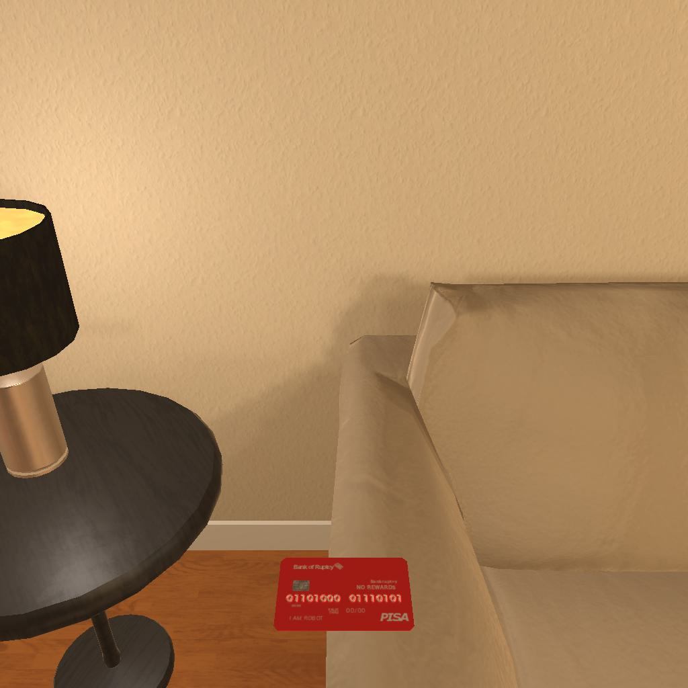

---------------------------------------------------------task: 7---------------------------------------------------------
--------------------------------------------------------------------------------------------------------------------------------------------------------------------
--------------------------------------------------------------------------------------------------------------------------------------------------------------------
Step:--------------------------------------------------------------------------11-------------------------------------------------------------------------------
----------------------------------------
VLM Prompt:
Image1:
Image2:
Image3:
**Instruction**
1. Analyze the provided images to identify all visible household objects and compare the difference between images (e.h. whether the object is opened or not and taken on hand or not), focusing on those relevant to the task description "put a creditcard in coffeetable."
2. Use the analysis of images and the task hint "The agent must find an object of the desired type, pick it up, find the correct location to place it, and put it down there." to answer the question: what is the most reasonable action in the choices for the task description "put a creditcard in coffeetable"?
3. Decide and write the answer using the template: The answer is: (i): , where i is the real number. If there is no desired object in images, search every place based on **Initial Observation** to find the object. And if no one is exactly correct, choose a similar answer.
**Initial Observation**
You are in the middle of a room. Looking quickly around you, you can see armchair (1-2), dresser (1), garbagecan (1), cabinet (1-4), drawer (1-4), coffeetable (1), sidetable (1), sofa (1)
**Answer Choices**
(1): go to armchair 1
(2): go to armchair 2
(3): go to dresser 1
(4): go to garbagecan 1
(5): go to cabinet 1
(6): go to drawer 1
(7): go to drawer 2
(8): go to cabinet 2
(9): go to drawer 3
(10): go to cabinet 3
(11): go to drawer 4
(12): go to cabinet 4
(13): go to coffeetable 1
(14): go to sofa 1
(15): put creditcard 2 in/on sidetable 1
**Answer**
Let's think step by step by following the instructions.
----------------------------------------
----------------------------------------
Original Response:
1. Analyzing the provided images, the visible household object related to the task description "put a creditcard in coffeetable" is the creditcard located on the sidetable next to the sofa and lamp.
2. Based on the task hint, the agent must find the object (creditcard), pick it up, find the correct location (coffeetable), and put it down there. In the images, the creditcard is already found, and it is not in hand, so the next reasonable action is to pick it up.
3. The answer is: (15): put creditcard 2 in/on sidetable 1. This action aligns with the task description and the visible object in the images. Even though the action says "put" and we need to "pick up" the creditcard first, there is no other option that says "pick up," so (15) is the closest and most reasonable action to take.
----------------------------------------
----------------------------------------
>>> Refine Original VLM Response and Get Pure Action: put creditcard 2 in/on sidetable 1
----------------------------------------
-----------------------------------------------------------------
Running time: 9.452553510665894 seconds
Total Money: 3.2682900000000012
-----------------------------------------------------------------
-----------------------------------------------------------------
Text Observation:You put the creditcard 2 in/on the sidetable 1.
-----------------------------------------------------------------
UNSUCCEED